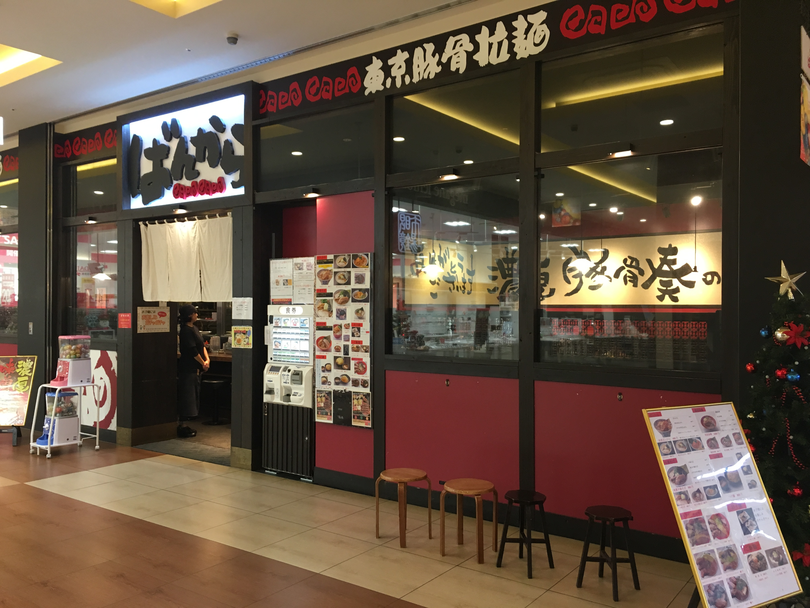

Distance from station
400 meters from JR Tsudanuma Station
phone number
047-474-8283
place
〒275-0028 Mori Forte 1F of Narashino-shi, Chiba Prefecture
business hours
11:00~23:00
Regular holiday
Irregular holiday (Follows Mori Forte 's performance)
・Return to the ramen list